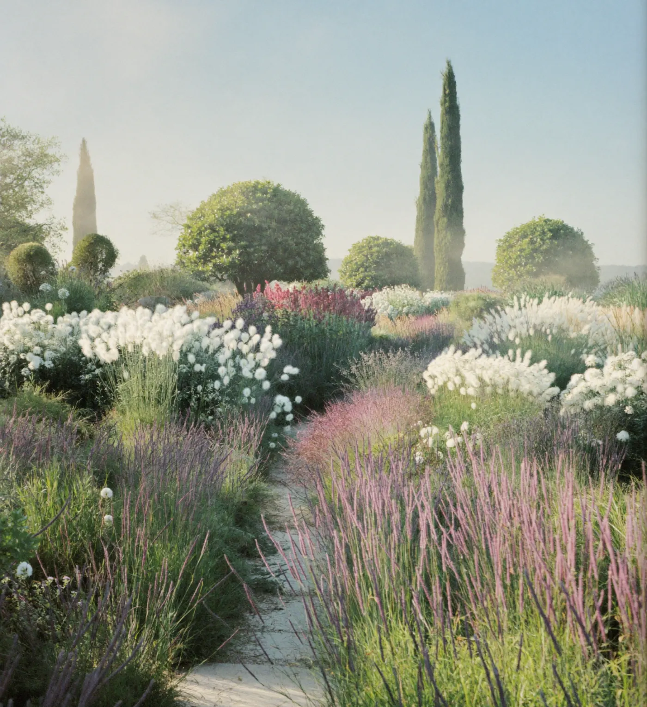
Garden design and build studio
Gardens thatgrow intothemselves.
(01) The studio
We design gardens the way good planting grows: slowly, in layers, for the light you actually have. Then our own crew builds every stone and sets every plant.
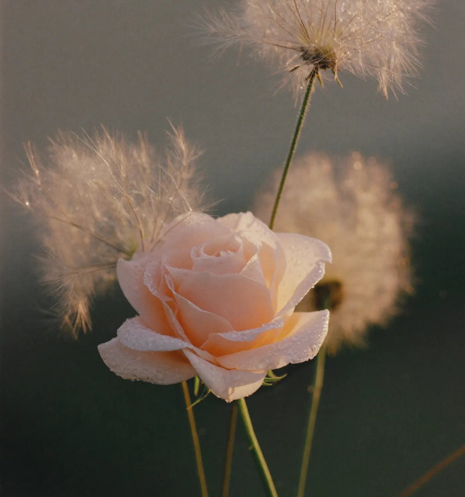
(02) Four seasons
Designed for January as much as June.
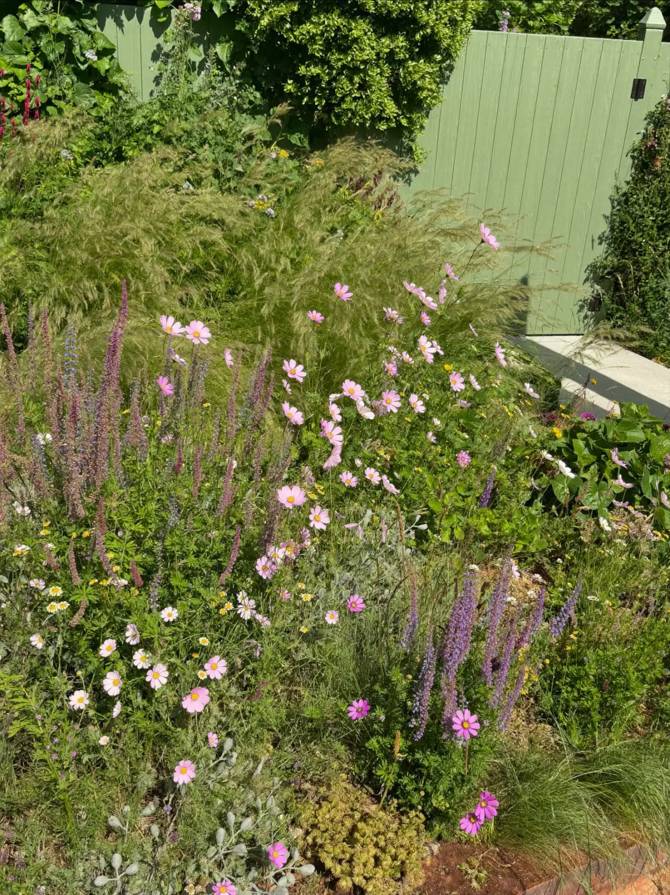
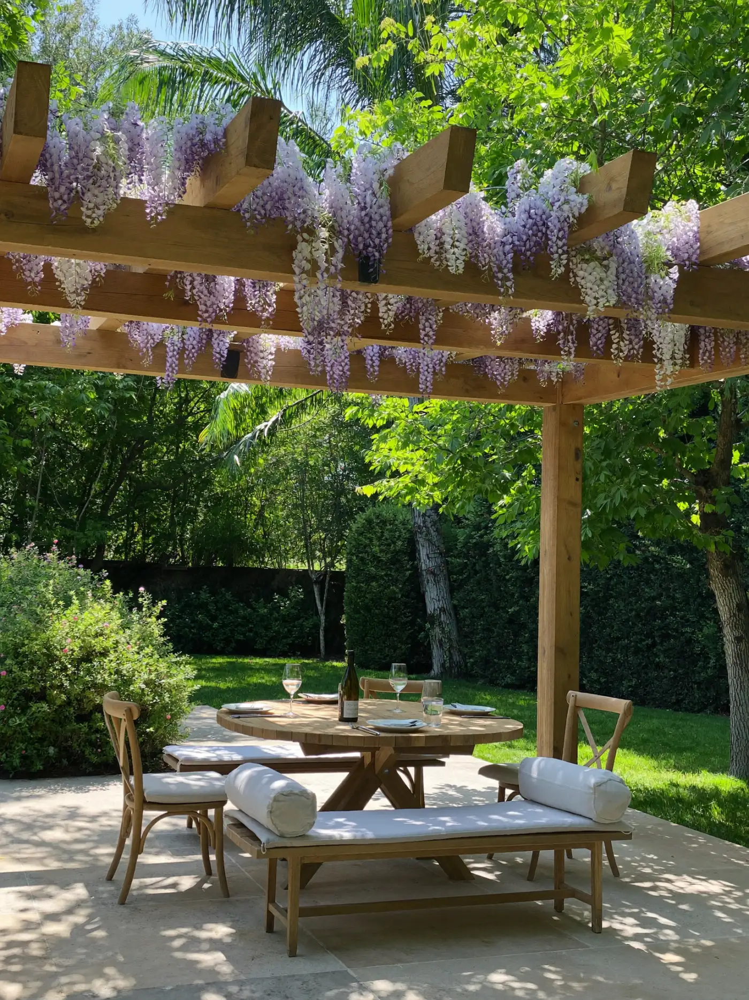
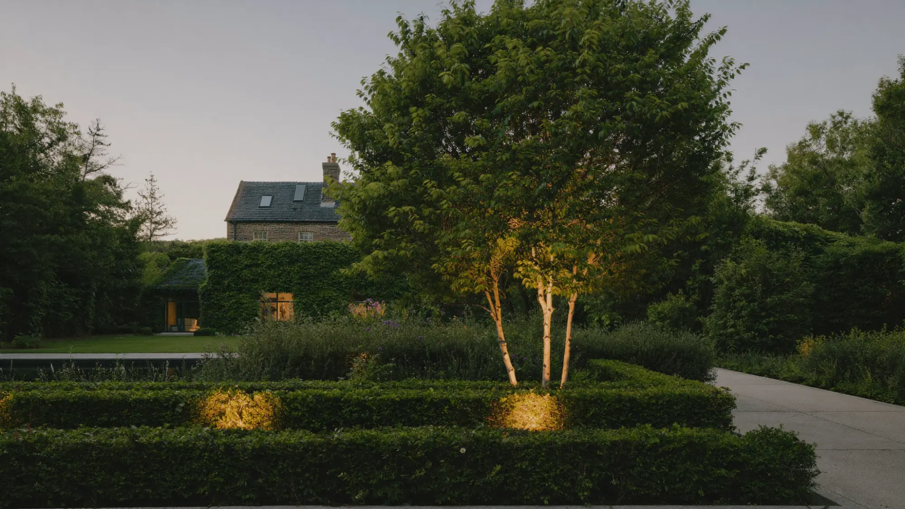
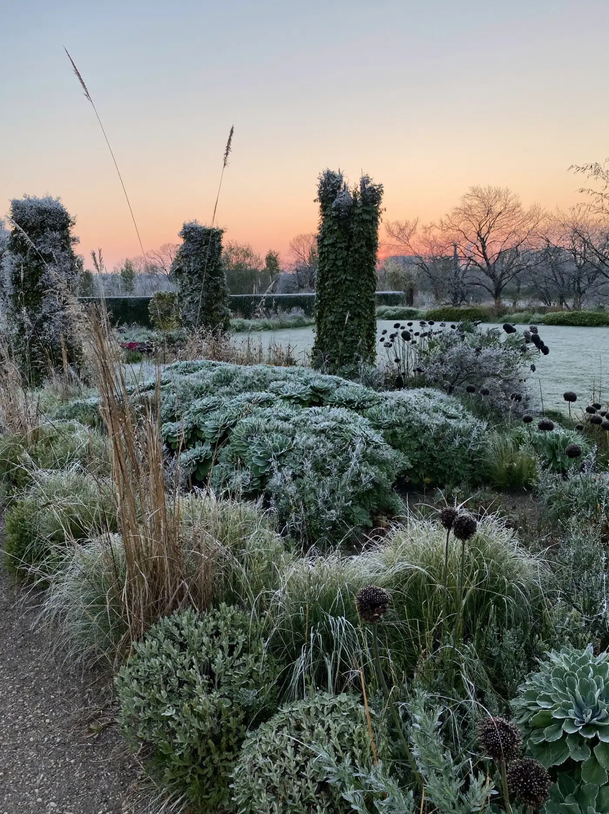
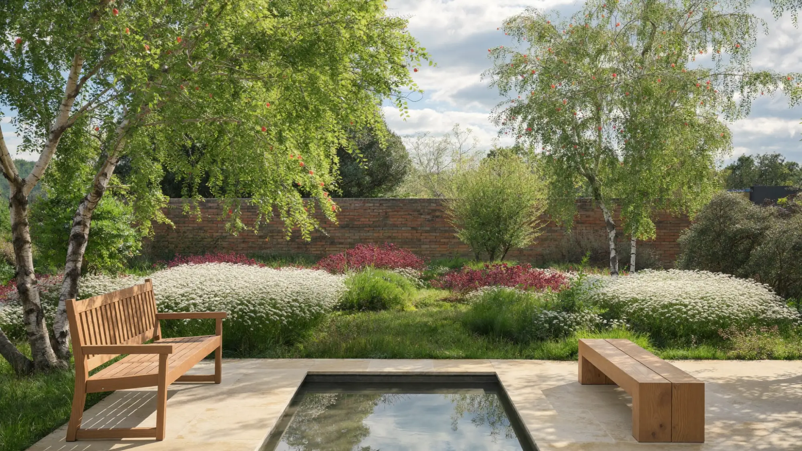
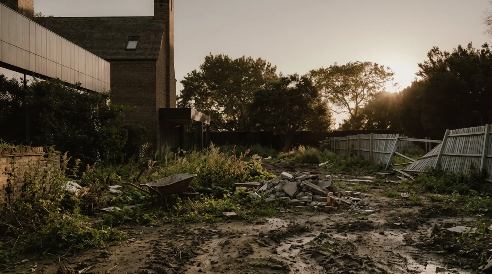
(03) The change
From mud
to meadow.
- Week 1Clear and level
- Week 4Stone and water
- Week 10Plant and settle
(04) What we make
Everything past the back door.
- 01Garden design
A measured survey, a scaled plan and a planting palette you can walk through before a spade goes in.
- 02Naturalistic planting
Layered borders of grasses and perennials chosen for your soil and aspect, sourced from specialist nurseries.
- 03Stone and terraces
Sandstone, limestone and reclaimed brick laid on proper foundations with the drainage built in.
- 04Water and light
Reflecting pools, rills and warm low lighting designed into the scheme, never bolted on at the end.
- 05Garden rooms
Green oak pergolas, dining terraces and fire for long evenings outside.
- 06Aftercare
Seasonal visits so the garden grows into the design, not away from it.
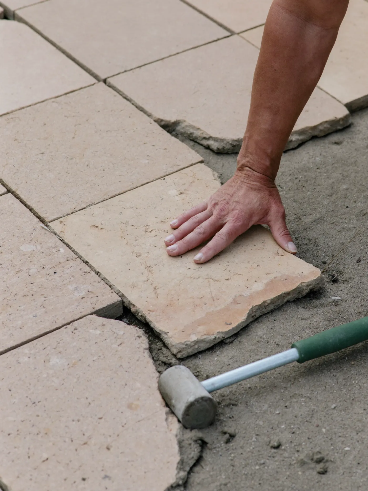
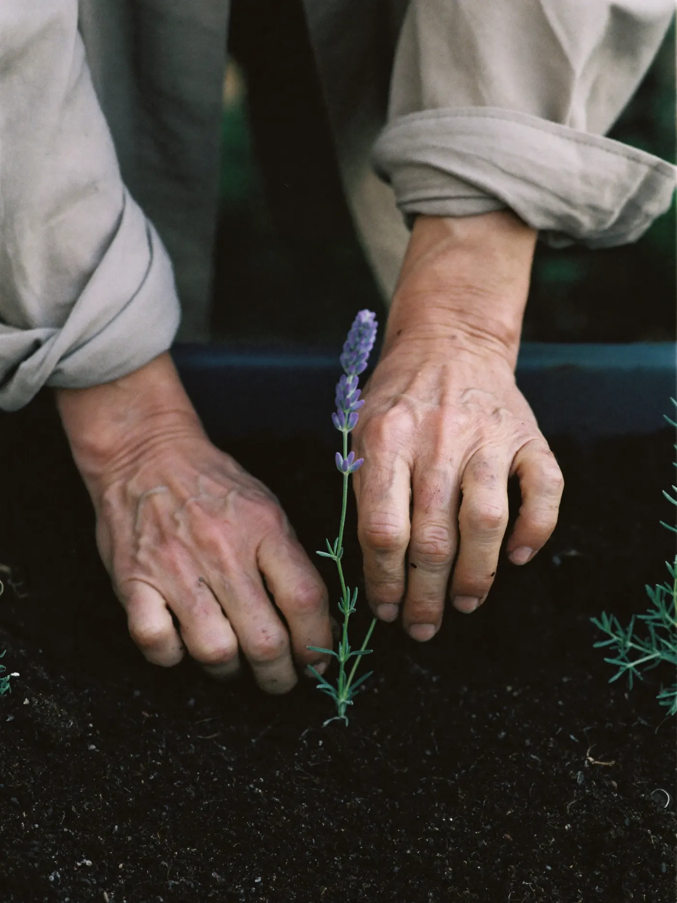
(05) From sketch to soil
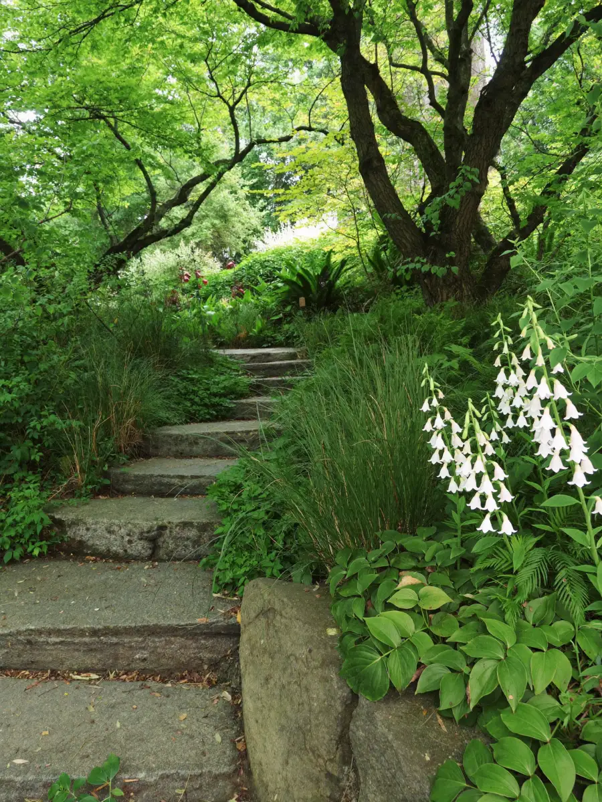
We start in your garden.
A first visit to walk the space with you, read the light and the soil, and talk about how you want to live in it.
One crew, start to finish.
Groundworks, stone, water and lighting by the same hands, on a clear programme, with the site left tidy every evening.
Planted by the people who drew it.
Every plant set out by eye on the day, then aftercare through the first year while everything settles in.
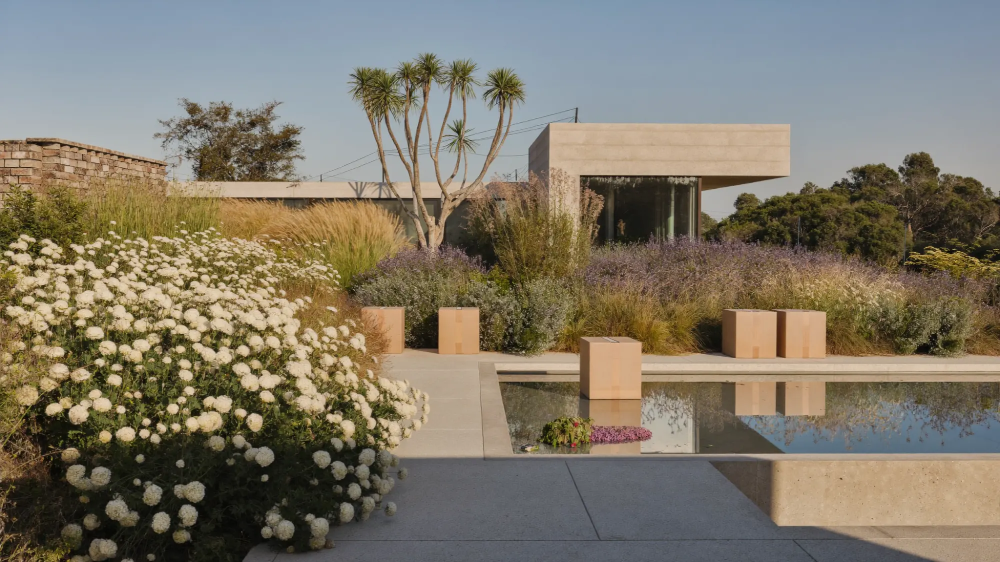
Designed for the view from the kitchen window as much as the terrace.
(06) Book a garden visit
Let’s start with a walk round.
Tell us a little about the space. We reply within two working days to arrange a visit.
Call the studio01632 960418